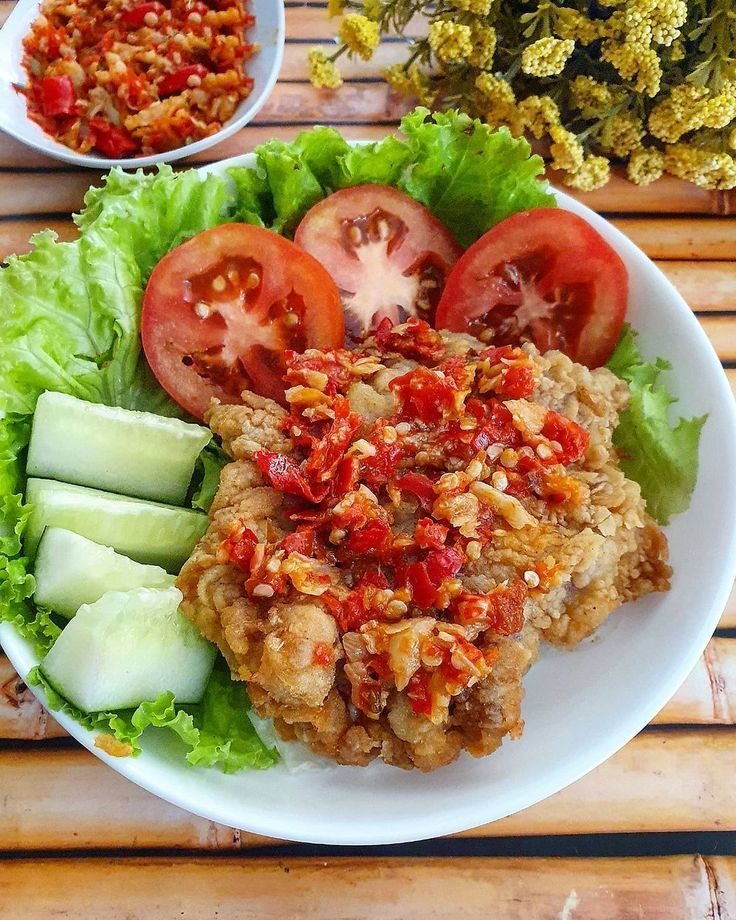
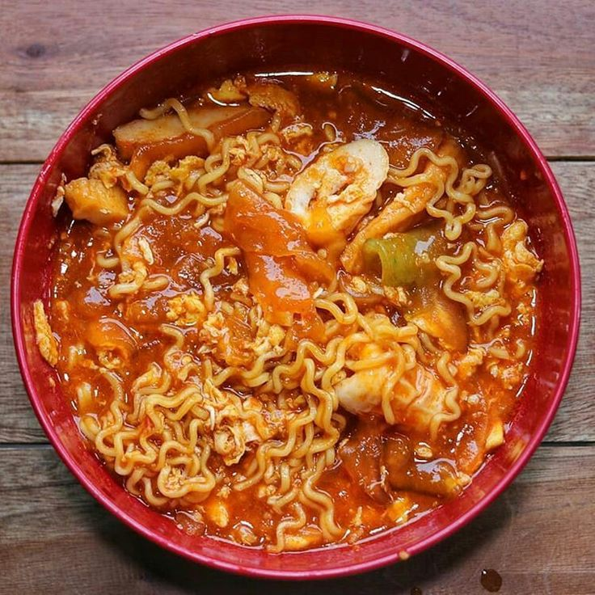
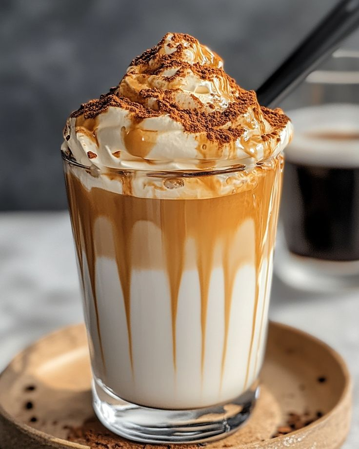

TEMUKAN RASA FAVORITMU
TEMPAT BERBAGI RESEP SEDERHANA DAN MAKANAN FAVORIT
MULAIWebsite ini dibuat sebagai ruang sederhana untuk menjelajahi berbagai rasa dari makanan sehari-hari. Setiap resep tidak hanya berfungsi sebagai panduan memasak, tetapi juga membawa cerita kecil di baliknya. Kami ingin menghadirkan pengalaman yang hangat dan dekat dengan kehidupan sehari-hari.
Rasa dalam setiap makanan selalu memiliki cerita yang berbeda bagi setiap orang. Karena itu, kami mengumpulkan berbagai ide masakan yang bisa dinikmati oleh siapa saja. Harapannya, setiap resep di sini bisa menjadi bagian dari momen kecil yang berkesan.
Temukan Rasa Favoritmu hadir untuk membantu kamu menemukan inspirasi masakan dengan cara yang sederhana. Website ini berisi kumpulan ide resep yang mudah dibuat di rumah tanpa langkah yang rumit. Kami ingin membuat proses mencari menu sehari-hari menjadi lebih menyenangkan.
Setiap orang memiliki selera dan cerita rasa yang berbeda dalam hidupnya. Melalui website ini, kamu bisa mengeksplorasi berbagai pilihan makanan sesuai suasana hati. Semoga kamu bisa menemukan rasa yang paling cocok dan berarti untukmu.
KUMPULAN MENU SIMPLE UNTUK SEHARI-HARI

Ayam crispy dengan sambal pedas yang digeprek langsung di atasnya.

Makanan pedas khas Bandung dengan kerupuk dan bumbu kencur.

Nasi goreng klasik dengan telur, ayam, dan kecap manis.

Dessert creamy khas Italia dengan rasa kopi dan coklat.

Kue lembut yang cocok dengan madu, buah, atau coklat.

Kopi creamy viral dengan foam lembut di atas susu.
SETIAP IDE MASAKAN PUNYA TEMPAT DI DAPUR INI
PLAYLIST MASAK + LOKASI INSPIRATIF
Musik biar makin fokus & enak masak 🍳
Dieng 🌿 adem, view gunung, cocok buat ide “outdoor cooking”